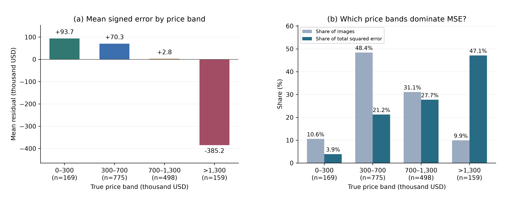

2026-10-19正文快照；云端文档为持续协作主版本。非最终IEEE成稿。
COMP90086 · 中文报告工作稿 · 更新于2026年10月19日
小组：1686631 & 1255329 · The University of Melbourne
本文按已完成实验更新，用于共同撰写英文终稿。各表明确区分历史三种子复核、补充单种子筛选、训练侧交叉拟合和公开榜结果；不是未经修改即可提交的四页IEEE成稿。
本项目研究从单张房屋外观图像预测销售价格。我们以训练均价和SIFT视觉词袋回归建立参照，再通过固定划分下的预处理、训练参数、增强和结构对照改进从零训练的AlexNet。常规改动收益有限，促使我们转向冻结通用视觉编码器与核岭回归，并在训练侧折外预测上学习融合权重。最终三分支融合在1,601张开发验证图像上取得MSE 52,201.21、MAE 159.58，已提交版本的公开榜MSE为47,291.35。补充对比度增强降低了AlexNet单种子总体误差，但恶化高价尾部；组件消融则显示主要性能来自PCA PE-G分支。误差分析仍发现低价高估、高价低估，说明视觉表征提升不能完全弥补单张外观缺失的定价信息。
课程数据来自南加州房产外观照片，而不是澳洲房产数据[1]。视角、主体尺度、照明和背景变化使价格相关信息难以提取；位置、面积及室内条件等又不一定能从外观可靠推断。因此，我们将任务视为图像回归，而非房屋类别识别，也不把模型预测解释为真实估价依据。
研究重点是用可比较的实验逐步定位瓶颈：先验证手工特征是否优于常数预测，再检查从零训练CNN对输入处理和增强的响应，最后检验预训练表征与分支融合能否缓解性能停滞。除整体MSE外，我们保留失败实验、价位分组和组件消融，避免仅以排行榜分数评价方法。
仅使用课程提供的8,000张有标签图像和3,000张测试图像，价格单位为千美元。固定split_v1将已检测的完全重复及登记的近重复按组分配，并按组价格分层抽样，得到6,399张训练、1,601张验证。两侧图片编号、已登记组和像素哈希无交集；但缺少房屋身份或地理元数据，不能保证同一房产的不同照片全部被识别。测试标签不参与训练或选参，也未补充原始SoCal数据集的额外图片或元数据。
AlexNet预处理比较了等比补边、直接拉伸、中心裁剪、提高分辨率、训练侧通道标准化及空间/频域低通。三种子复核后采用224×224直接拉伸、固定均值/标准差0.5且不额外滤波。拉伸保留全幅内容但改变比例，是当前实验下的折中；冻结编码器则沿用各自匹配的输入处理，不能统一套用AlexNet归一化。
常数参照始终输出训练集均价。传统路线用SIFT[2]描述局部梯度，将描述子量化为256词视觉词袋，经训练侧标准化后使用岭回归预测价格。词典、标准化与回归器仅在训练侧拟合。该方法能表示局部外观统计，但词袋弱化空间布局，也难以表达建筑、庭院和环境之间的语义关系。
将AlexNet[3]分类输出替换为单值回归，从随机初始化训练，目标价格除以1,000后计算MSE，评价时恢复课程价格单位。保留配置为AdamW、学习率10⁻⁴、weight decay 10⁻⁴、有效批量32（4×8梯度累积）和dropout 0.5。每组最多60轮、至少40轮，耐心15轮、有效改善阈值0.1%，最终恢复验证MSE最低的检查点。水平翻转概率0.5是历史多种子阶段保留的单项增强；Dropout是模型正则化，不是图像增强。
从零训练CNN的误差改善有限且存在过拟合，因此进一步使用SigLIP 2[4]及Perception Encoder（PE）[5]的冻结图像编码器，不使用文本生成模块或MLLM作房价预测。各分支使用RBF核岭回归，核K(x,x′)=exp(−γ‖x−x′‖²)，在训练侧选择核参数及正则强度。保留三条链路：NaFlex特征+RBF（γ=1、α=0.1）；PE-L多视图特征+图像RBF与PLS分数RBF的乘积核（4个PLS分量、PLS γ=0.1、α=1）；PE-G全图特征+256维PCA+校准带宽RBF（α=1）。PCA最终选中白化指数0，即不白化，不能写成采用了白化。
PCA、PLS及其缩放统计均在相应拟合折内学习；PCA后的核带宽用拟合侧距离中位数校准，而不是沿用变换前相同γ。融合为ŷ=Σwⱼŷⱼ，wⱼ≥0、Σwⱼ=1，权重在6,399条训练侧折外（OOF）预测上学习。冻结权重依次为0.1081、0.0808、0.8111。结构确定后，在全部8,000条标签上重新拟合所需变换与回归头，图像编码器仍冻结。
最终推理流程：图像 → 各编码器匹配的预处理与冻结特征 → 分支PCA/PLS及核回归 → 原价格尺度预测 → 冻结加权融合。多视图特征属于该分支设计，不等同于已证明有效的随机增强组合。
所有开发比较使用同一6,399/1,601划分。种子2026、2027、2028改变训练随机性而不改变样本分区；增强仅作用于训练图像，验证关闭增强与Dropout。MSE为主指标，MAE及价格>1,300的159张尾部图像辅助解释。MSE单位为(千美元)²，MAE和偏差单位为千美元；“±”为三个独立模型指标的样本标准差，不是置信区间或三模型预测集成。
冻结特征路线使用训练侧3折分组交叉验证及OOF融合；meta-crossfit仅在另外两折拟合融合权重并预测留出折。基础表征和超参数已被选择，开发验证集也反复使用，因此这些结果不是完全嵌套的无偏泛化估计。公开榜、固定验证和训练侧meta-crossfit对应不同样本，必须分别报告。表I汇总方法级结果，不能把方法间全部差距归因于单个模块。
表I. 同一1,601张开发验证图像上的方法比较
| 方法 / 证据类型 | 验证MSE | MAE | 尾部MSE |
|---|---|---|---|
| 训练均价（确定性） | 151,839.69 | 294.47 | 841,224.66 |
| SIFT–BoVW–Ridge（3种子） | 145,336.73 ± 1,091.58 | 288.66 | 757,394.09 |
| AlexNet无增强（3种子） | 127,774.42 ± 486.30 | 264.52 | 679,580.17 |
| AlexNet水平翻转（3种子） | 126,810.01 ± 1,902.23 | 268.02 | 651,373.83 |
| NaFlex核回归（已选配置） | 63,086.48 | 181.28 | 273,365.78 |
| PE-L PLS核回归（已选配置） | 59,483.31 | 171.73 | 266,009.73 |
| PCA PE-G核回归（已选配置） | 52,805.77 | 160.67 | 247,214.13 |
| 最终三分支融合（冻结） | 52,201.21 | 159.58 | 247,739.31 |
传统与AlexNet的三种子行按每个模型指标再取平均；冻结分支与融合行是已选配置的单次评估。最终融合相较水平翻转AlexNet的平均MSE低约58.83%，这是整条方法链的比较，并非某一个模块的纯消融。公开榜历史已提交成绩47,291.34608仅作独立结果记录，不写作当前排名或私榜成绩。
表II. 已完成实验总览与阶段决策
| 阶段 | 已完成比较 | 主要证据 | 决策 |
|---|---|---|---|
| 预处理 | 补边、拉伸、裁剪、分辨率、标准化、低通 | 拉伸3种子MSE 127,774.42；滤波127,886.38 | 保留拉伸，无滤波 |
| 传统参照 | SIFT视觉词袋+岭回归 | 3种子MSE 145,336.73 | 作为传统参照 |
| CNN调优 | 学习率、优化器、调度、批量、Dropout等 | Adam/余弦/批量改动未胜出复核 | 保留原调优配置 |
| 历史增强 | 翻转、旋转、平移、裁剪、模糊、噪声、擦除 | 翻转均值改善0.75%；擦除复核失败 | CNN阶段保留翻转 |
| 光度补充 | 新对照、亮度、对比度；各1种子 | 对比度总体−1.93%，尾部+17.14% | 候选，不晋级 |
| 结构初筛 | 小核、多尺度、残差；各1种子 | 均差于126,601.97对照 | 不保留 |
| 冻结表征与融合 | NaFlex、PE-L PLS、PCA PE-G及融合 | 验证52,201.21；meta 52,210.22 | 最终冻结三分支 |
| 结果审计 | 分支消融、价位误差、校准增量筛选 | PE-G主导；校准未晋级 | 维持原提交 |
本表是研究路线摘要，不代表每阶段均产生显著提升；所有单种子结论仅适用于对应配置和预算。
历史增强单项均与无增强AlexNet比较，不叠加翻转。水平翻转三种子平均MSE由127,774.42降至126,810.01，改善0.75%，但仅2/3配对改善；局部擦除初筛微升后复核失败，三种子均值128,300.21，仅1/3改善。旋转、平移、裁剪、模糊和噪声均在种子2026初筛退步，因此未追加种子，不能据此认定这些操作在所有幅度下都无效。
表III. 历史增强单项初筛（种子2026；Δ=候选−同批无增强）
| 操作与参数 | 验证MSE | ΔMSE | 复核 / 决策 |
|---|---|---|---|
| 无增强 | 128,268.67 | 0 | 3种子对照 |
| 水平翻转 p=0.5 | 126,601.97 | −1,666.70 | 3种子2/3改善；保留 |
| 旋转 p=0.3，±3° | 129,526.18 | +1,257.51 | 单种子未通过 |
| 平移 p=0.3，各轴±3% | 129,162.73 | +894.06 | 单种子未通过 |
| 裁剪 p=0.3，面积90–100% | 130,222.98 | +1,954.31 | 单种子未通过 |
| 模糊 p=0.2，5×5，σ=0.3–0.8 | 129,941.36 | +1,672.69 | 单种子未通过 |
| 噪声 p=0.2，σ=0.01 | 131,174.53 | +2,905.87 | 单种子未通过 |
| 擦除 p=0.15，面积1–3% | 128,114.40 | −154.27 | 3种子仅1/3改善；放弃 |
水平翻转的低价和中价误差有所增加，高价与尾部收益抵消了这些损失。因此“平均改善”不等于所有价位都更准确。
表IV. 2026-10-19补充光度实验（同批新对照，单种子2026）
| 本轮方案 | 验证MSE | MAE | 尾部MSE | ΔMSE |
|---|---|---|---|---|
| 新无增强对照 | 131,389.94 | 282.64 | 593,970.49 | 0 |
| 亮度 U(0.9,1.1) | 131,433.91 | 274.50 | 616,903.93 | +0.03% |
| 对比度 U(0.9,1.1) | 128,860.53 | 269.01 | 695,747.66 | −1.93% |
三组配对使用相同初始化、划分和训练设置，亮度/对比度分别以概率1采样乘数U(0.9,1.1)，不叠加其他增强，均完成40轮。亮度MSE基本不变；对比度总体MSE改善1.93%、MAE下降，但高价尾部MSE恶化17.14%。这支持有限的总体收益而非全面改善，尚需多种子复核。本轮必须与131,389.94的新对照配对，不能用旧三种子127,774.42或旧2026结果替代。两项均未晋级最终编码器或替换提交。
表V. 相对水平翻转AlexNet的结构初筛（种子2026）
| 结构配置 | 验证MSE | Δ vs 对照 | 阶段决策 |
|---|---|---|---|
| 水平翻转AlexNet | 126,601.97 | 0 | 对照 |
| 小卷积核堆叠 | 127,319.95 | +717.98 | 不保留 |
| 多尺度块 | 130,027.49 | +3,425.52 | 不保留 |
| 残差块 | 128,714.26 | +2,112.29 | 不保留 |
小卷积核堆叠、多尺度块、残差块均未超过同一对照，故本轮未保留。它们是AlexNet的独立结构改动，不是完整VGG、Inception或ResNet的公平架构排名；也不能把单种子失败写成结构普遍无效。
表VI. 固定基分支预测的组件消融
| 分支 / 组合 | 验证MSE | MAE | 训练侧meta MSE |
|---|---|---|---|
| NaFlex单独 | 63,086.48 | 181.28 | 64,475.13 |
| PE-L PLS单独 | 59,483.31 | 171.73 | 59,515.43 |
| PCA PE-G单独 | 52,805.77 | 160.67 | 52,531.27 |
| 移除NaFlex，重拟合 | 52,597.50 | 160.21 | 52,359.30 |
| 移除PE-L PLS，重拟合 | 52,194.81 | 159.57 | 52,244.24 |
| 移除PCA PE-G，重拟合 | 57,372.90 | 168.45 | 57,694.20 |
| 等权融合 | 53,847.68 | 162.56 | 54,214.33 |
| 原冻结完整融合 | 52,201.21 | 159.58 | 52,210.22 |
删除分支后，仅在训练OOF上重新拟合剩余凸组合权重；编码器和基回归头不重训。PCA PE-G是最强单分支，删除后验证MSE升至57,372.90；NaFlex虽单独较弱，删除后也升至52,597.50，支持其有限互补作用。完整融合优于等权融合的53,847.68。
PE-L PLS的边际贡献很弱：删除并重拟合后验证MSE为52,194.81，比原方案低6.40（约0.012%），但meta-crossfit由52,210.22升至52,244.24，方向并不一致。因此不宣称每个分支都有稳定收益，也未据此替换已冻结提交。删除整条PCA或PLS分支并不等于单独移除该变换，不能将差异全部归因于PCA/PLS本身。
后续增量筛选中，仿射校准和无约束岭融合的meta-crossfit MSE分别为52,251.89、52,256.36，均未超过52,210.22对照，故未晋级。补充实验未改变最终融合权重或Kaggle预测。
最终模型的MAE为159.58，中位绝对误差113.41，90%分位绝对误差343.60；总体平均偏差仅+6.51，却掩盖了低价高估与高价低估。>1,300组仅占9.93%样本，却贡献47.13%的平方误差，平均低估385.16。误差最大的161张图像贡献63.30%的总平方误差，说明少数大残差对MSE有很强影响。
表VII. 最终融合的分价位表现（偏差=预测−真实价格）
| 价格区间 | n | MAE | 平均偏差 | 平方误差占比 |
|---|---|---|---|---|
| ≤300 | 169 | 104.03 | +93.72 | 3.92% |
| (300,700] | 775 | 112.22 | +70.27 | 21.23% |
| (700,1,300] | 498 | 171.89 | +2.75 | 27.72% |
| >1,300 | 159 | 410.90 | −385.16 | 47.13% |
数值选例而非挑选“好看的图”：按每个价位取最接近预测、中位绝对误差附近、最大高估和最大低估。最高价组的2138.jpg真实价格1,995，预测605.27，低估1,389.73；7223.jpg真实1,495，预测1,486.60则较准确。这说明高价本身不必然导致失败，但某些高价样本仍难以从外观判别。仅凭案例不能判定标签错误或归因于具体物体。

图1. 最终融合的价格分组偏差及平方误差份额；各组基于同一固定验证集，尾部阈值来自训练数据。
从零训练AlexNet中，训练损失持续降低而验证误差早早触底后反弹，与后期过拟合相容。训练损失在缩放目标且开启Dropout/增强的模式下计算，不能直接与原价格验证MSE比较。已有少量灰块遮挡诊断只说明某些区域会影响输出，不是物体因果作用或注意力真值；这些旧AlexNet热图也不能当成最终冻结融合模型的解释。
方法仍有四类限制。第一，单张外观不能完整表达位置、面积、内部状态等因素，本实验无法量化它们各自的贡献。第二，多次使用同一开发验证集以及基础模型先选参，使选择偏差无法由三折meta-crossfit完全消除。第三，亮度/对比度只做一个种子，不能宣称稳定增益、统计显著或可直接迁移到最终编码器。第四，通用预训练数据的完整来源无法独立核验，虽只使用图像编码器且未主动获取课程外SoCal标签，仍不声称已证明零预训练重叠。
计算成本也需分开：冻结编码器降低任务训练的参数量，却需要较大的权重与特征提取开销；缓存后的CPU回放不能等同于从原图端到端复现。后续更有价值的方向是在新的独立评价上核验小幅收益、检查视觉子群覆盖及重复样本，而不是只追求一次公开榜提升。
实验表明，预处理、常规增强和小规模结构改动对从零训练AlexNet的收益有限且有价位取舍。更大的方法级改善来自冻结通用视觉表征、训练侧核回归与非均匀融合。组件消融支持以PCA PE-G为主、NaFlex作有限补充，未证实PE-L PLS具有稳定边际增益。最终保留三分支冻结方案；新对比度结果仅作为候选证据，不据单种子整体改善覆盖尾部退步或修改最终提交。
[1] T. Dogan, “House Prices and Images – SoCal,” 2019. 数据来源按课程COMP90086_2026_Project.pdf引用；实验仅使用课程提供的子集。
[2] D. G. Lowe, “Distinctive Image Features from Scale-Invariant Keypoints,” International Journal of Computer Vision, vol.60, no.2, pp.91–110, 2004. https://www.cs.ubc.ca/~lowe/papers/ijcv04.pdf
[3] A. Krizhevsky, I. Sutskever, and G. E. Hinton, “ImageNet Classification with Deep Convolutional Neural Networks,” NeurIPS, 2012. https://papers.nips.cc/paper_files/paper/2012/hash/c399862d3b9d6b76c8436e924a68c45b-Abstract.html
[4] M. Tschannen et al., “SigLIP 2: Multilingual Vision-Language Encoders with Improved Semantic Understanding, Localization, and Dense Features,” arXiv:2502.14786, 2025. https://arxiv.org/abs/2502.14786
[5] D. Bolya et al., “Perception Encoder: The best visual embeddings are not at the output of the network,” arXiv:2504.13181, 2025. https://arxiv.org/abs/2504.13181